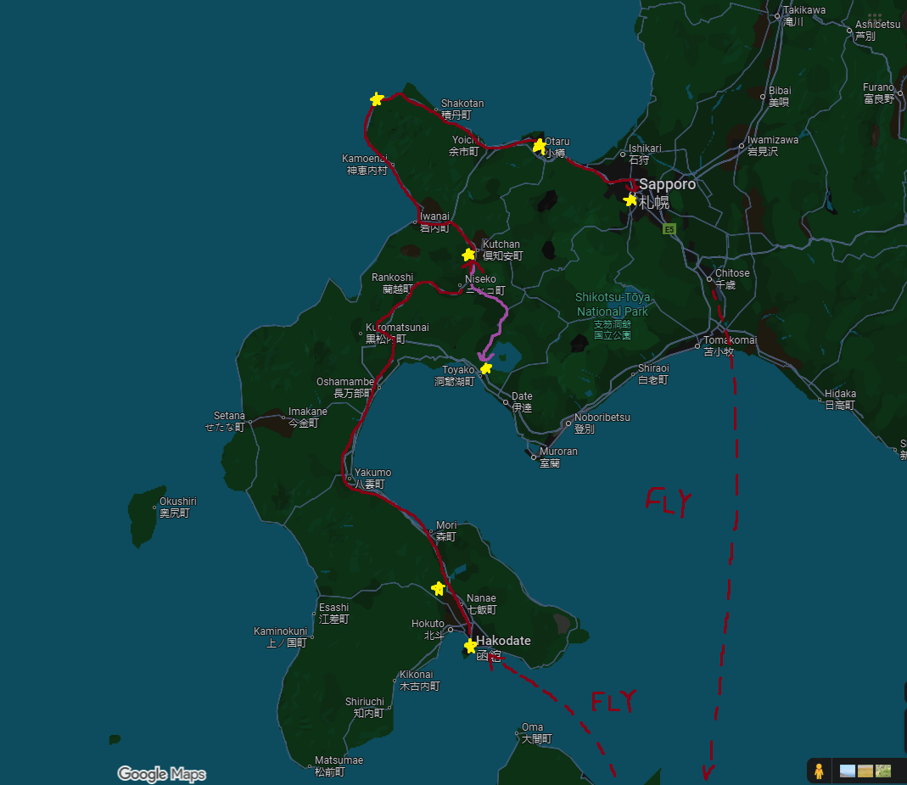

Tokyo and Kichijoji
Landed in Sapporo and wandered around the city.

9/30/2025 - 10/14/2025
Our plan this trip was to explore Hokkaido. We will fly into Tokyo and stay a few nights, then fly into Hakodate (Hokkaido), rent a car and drive north to Niseko/Kutchan/Hirafu (day trip to Lake Toya), then drive to Sapporo along the coast (stop by Cape Kamui and Otaru), and finally fly back to Tokyo for a few days before flying home.
Landed in Sapporo and wandered around the city.
Visited a hot spring and some scenic places.